KyandianViharala/Alutgama
スリランカ佛教最前線、お次は南へ南へと向かう。
実質的な首都コロンボから南部の町ゴールに向かうゴールロードは海沿いの大動脈。
しかし大動脈とはいえ幅の少ない舗装道にはバスやトラック、乗用車、三輪タクシーのスリーウィラー、バイク、自転車、歩行者、時には牛や象までがあふれ返っている。
そんな道路のフェアウェイ争奪戦を力技で制しながらの命がけドライブが延々と続く。
あまりにも凄い路上の仁義なき戦い・セイロン死闘編に段々気が遠くなってくる頃、アルトゥガマに差し掛かる。
幹線道路から一本内陸部に入ると今までの抜きつ抜かれつの混戦モードから一転してのんびりとしたムードに。
そんな田舎道を走っていると突然椰子の木のジャングルの向こうに巨大な仏サマのシルエットが現れる。
むむむ。コレはかなり大きいぞ。
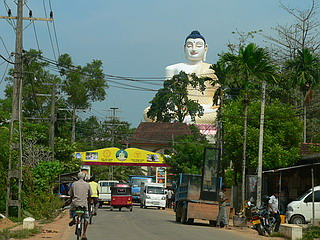
この寺はKyandianViharalaといい、近在の人達には結構有名なお寺らしい（そりゃあ、こんなにデカイ仏がいるわけですから）。
門の近辺にはたくさんの土産物や供え物を売る屋台が並んでいた。
門を潜り中に入る。
大仏自体は完成していたが、台座や参堂はまだ工事中だった。
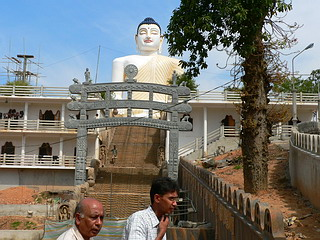
青空に聳える大仏さん。40メートル以上はあるだろう。
坐像では世界一といわれる香港の天壇大仏よりも大きいと思う。
てことは世界一？とも思うが、この後スリランカだけでもコレくらいの大きさの坐像仏がごろごろと現れることが判明。
世界一かどうかは微妙だが、間違いなくワールドクラスの大仏さんである。
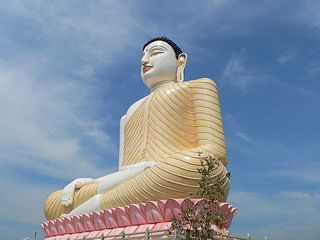
もちろん衣はヒダヒダピッチリスタイル。
つま先がピーンと伸びていて腕が細く、脇の下が開いていないので全体的なプロポーションがすらっとしているのも特徴だ。
台座部分に入り口があったので迷わず入ってみる。
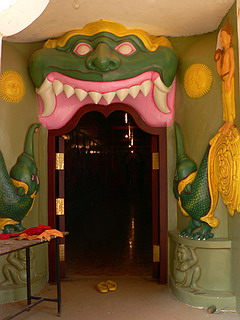
内部は両サイドに仏教説話をモチーフにしたレリーフが延々と続く回廊。
おっ、ここにも青い仏さんが。コブラに咬まれて顔色が悪いんでしょうか?
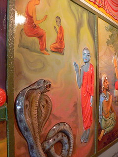
半立体のレリーフなのだが、壁に描かれた下描きの絵に無理矢理肉付けしたようなレリーフなので斜めから見ると首がずれちゃってて実に味わい深いイイ感じ。
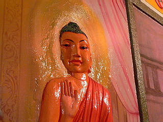 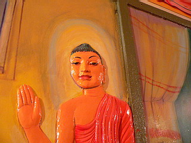
壁面をリニューアル中のヒゲ兄貴。
レリーフの不自然さは百も承知だが、今日も今日とて手法を変えず突き進む姿に漢っぽさを感じるぞ。加油！
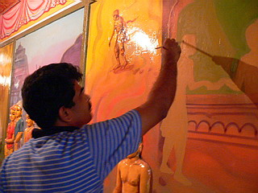 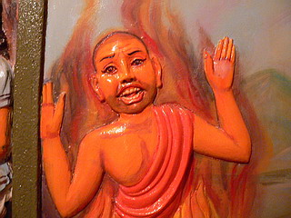
さらに回廊を進むと、突き当たりに。嗚呼、この国にも大仏の胎内巡りとかはないのかあ〜。
そこには仏像が安置されていた。
良く見ると仏サマの後背って椅子の背もたれの向こう側にある。
ということは仏サマの後背って体から離れているものなのか…勉強になりました。
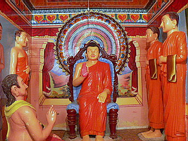 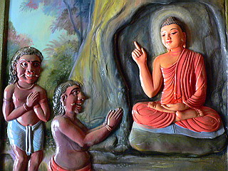
牙が生えた人たちに何かアドバイスをしているようです。すっごくイイ事を聞いたようですね。
さてさて、回廊を出るともうひとつ入り口がある。
しかもそちらには大勢の人が出入りしている。
むむむ、もしかして胎内巡りでは…と期待しつつ、中に入るとそこには…
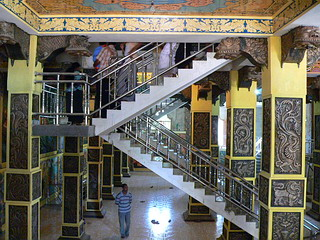 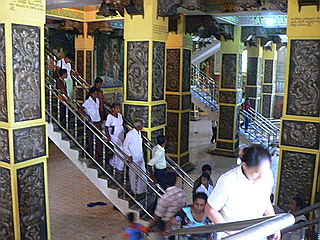
うひょ〜、上に向かって階段が伸びているではないですか!
間違いない！40メートル級大仏の胎内巡りだぁ〜！！
順路としては入り口から階段を1層分下りて広いホールに出る。そこから再び階段を上り、胎内ツアーに出かける訳だ。
階段は2ヶ所あり、上りと下り階段を分離しているのでは…と思ったが両方から人が下りてきたり上ったりしているので厳密には区分されているわけではなさそう。
早速上ってみましょう。
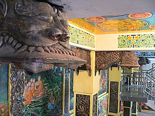
階段を上っていくと派手なホールの天井が迫ってくる。
柱の付け根の柱飾りがスゴいっすね。
ホールの上の階は打って変わって殺風景な部屋。もしかしたらこれからこってこてに装飾するのかもしれないが今のところそっけない空間だ。
さらに上を目指す。階段は2層目以降はず〜っとUの字型の回り階段。1層ごとに若干の小部屋があるが、殺風景そのもの。
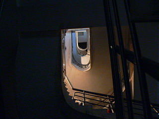 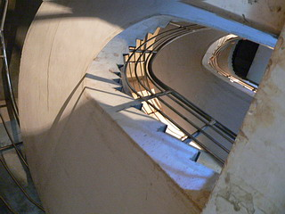
8層分ほど階段を上るとそこは大仏さんの肩のあたり。
一応照明がついているのはここまで。
上ってくる人達も「な〜んだ、こんなモンか〜」という顔をして下りていくが、胎内巡りの極意は「何があるか分からないから大仏は上ってイイところまでは上っとけ」。あえてもうひとつ上の真っ暗な最上階まで行ってみました。
懐中電灯をつけて上を照らしてみると頭の部分なのだろう。もう1層分の吹き抜け空間がある。
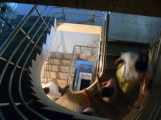 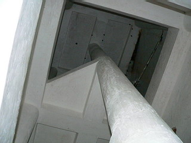
フラッシュを焚いて撮影してみると、天井にはコウモリらしきモノが。
そういえば真っ暗な最上階には鳥の糞がたくさん落ちていたような…
火中にて栗を拾うつもりが足の裏でコウモリの糞を拾っただけでした。
シンプルながら久々に本格的な胎内めぐりに遭遇し大満足。
再び階段を下りる。
上りの時点では気にもならなかったが背中の部分に小窓が開いていた。
眼下には地平線まで果てしなく広がる椰子の木のジャングル。何でこんな辺鄙なところに大仏があるんだろう…
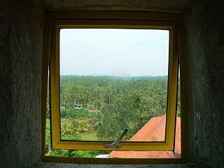 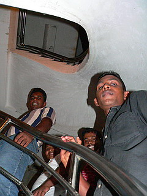
上ってきたヤンチャ4人組。
「ハイ、ジャパニ、この上には何があるんだ？」
「・・・・・・・・・・・。」
この場合、一般的には「何もない」と答えるのが正解なのだろうが…
あたしゃ口が曲がってもそんなことは言いませんよ！
でも「いや〜一番上に頭の吹き抜けが…」とか言い始めたらアタマおかしい人と思われちゃうし…
国の内外を問わず大仏舎弟の辛いトコです。
再びホールに下りてきた。
壁画が濃すぎて彫像が全然目立たないぞ。
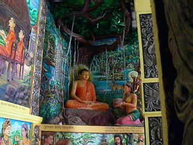
外に出ると大仏の建設計画が。
どうやら手前に歩行者デッキのようなものをつける模様。
大仏さんは10層でスリランカ最大だそうな。この手のハナシは眉に唾をつけて、っと。
そして内部は壁画で彩られる予定みたい。今は殺風景だが、どんなコテコテ壁画が現れるのか楽しみである。
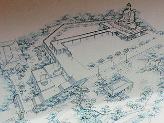
台座の部分は石積み中。
暑い中、皆さん建設活動をしております。ご苦労様です。
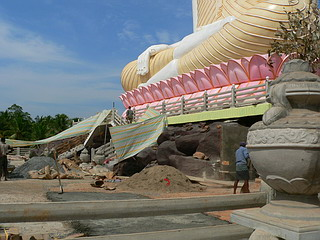
境内には本堂、僧坊、ミニ博物館などがある。
↓コレは多分自分の生まれた曜日の守り本尊。
巨大な花びらの中には菩提樹がある。
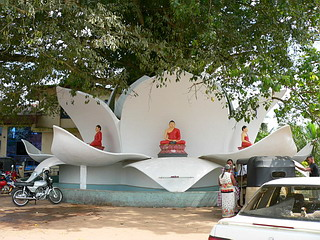
スリランカのお寺では菩提樹をとても大切にしており、周りをコンクリでがっちり固めて参拝の対象になっている。
…そういえばスリランカってお線香あげないんですね。
仏教といえば線香、と信じて疑わない私としてはチョット意外でした。
これにて楽しい大仏登頂はお終い。
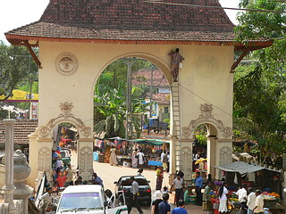
腹が減ったので門前でバナナを買ったが青臭かったです。
あっ、コレってお供え物だぁ〜